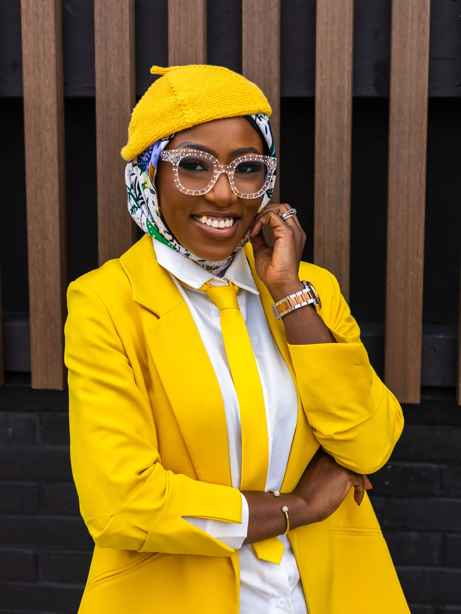
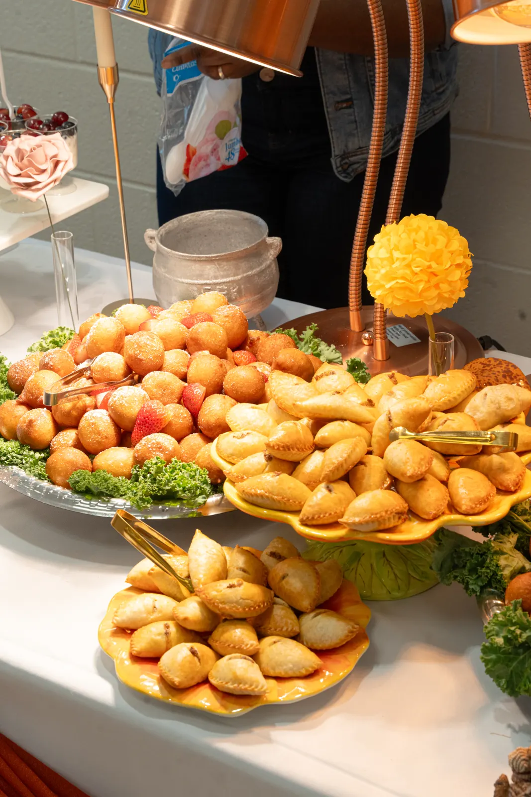
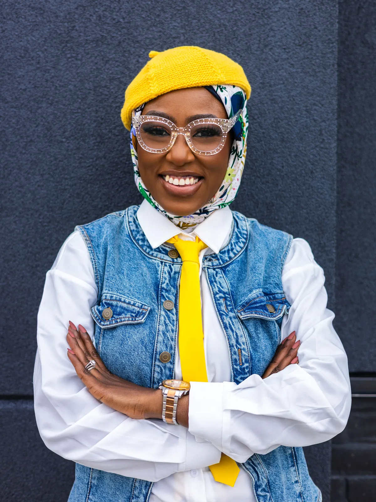
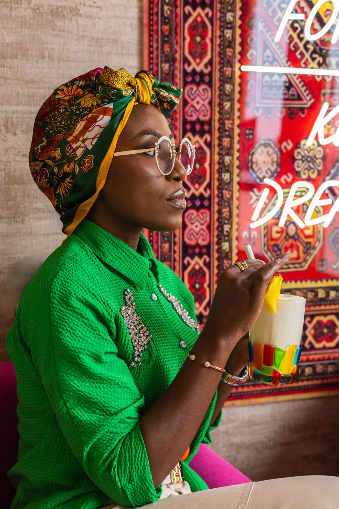
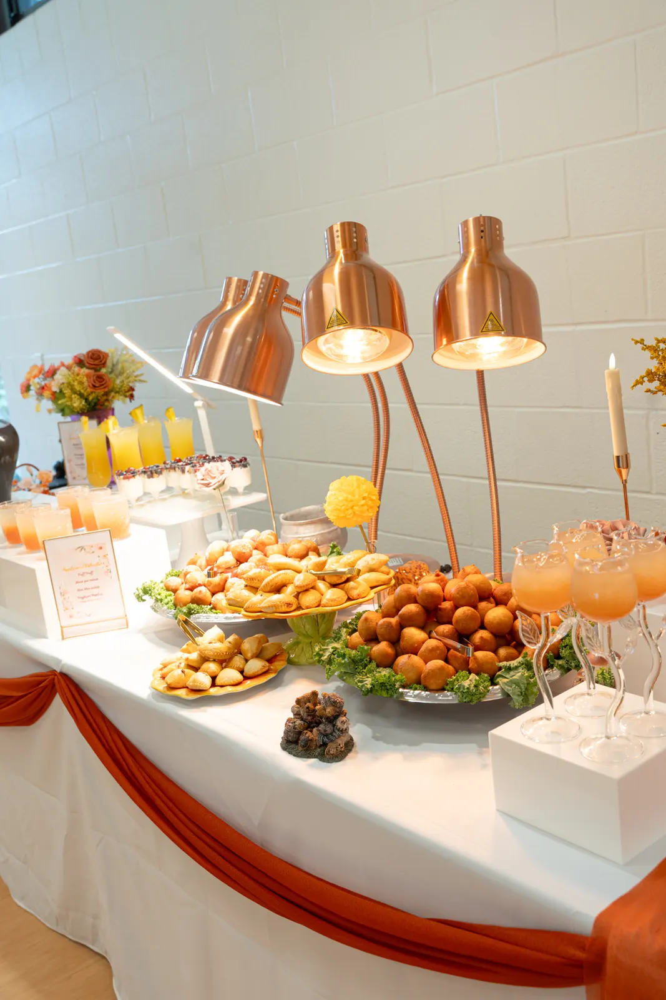
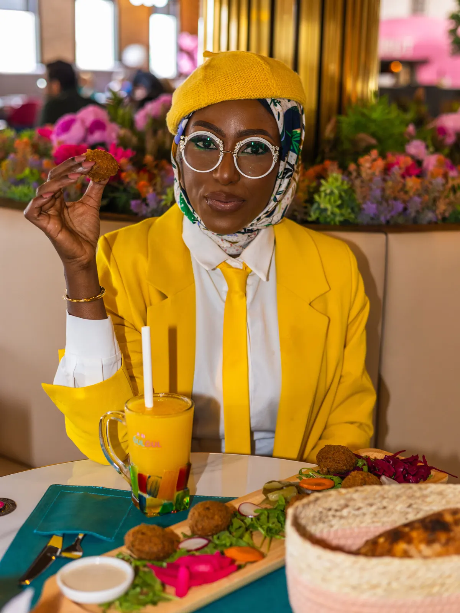

That Foodie Lawyer is a platform for looking deeper at food: the expectations it creates, the experiences it shapes, the trust it requires and the businesses behind it. Through consumer insight, curated experiences, industry conversations and strategic advisory, I am shaping a future where people experience food more fully, beyond what is on the plate, and the industry is equipped to deliver better.
Enter the World of TFL →


Food is personal, commercial and deeply connected to how people live. Behind every plate, product and hospitality moment are choices about quality, trust, service, systems and experience. TFL brings that whole picture into view so consumers can expect better, founders can build better and the industry can move forward with greater intention.
Explore the ideas, experiences, conversations and strategic work shaping a more thoughtful future for food and hospitality.
Build a stronger food or hospitality business with clearer decisions, smarter systems and practical support.
Explore Consulting → 02Step into thoughtfully curated experiences designed to feel intentional, engaging and worth remembering.
Discover Experiences → 03Look deeper at the culture, systems, standards and stories shaping how food is experienced.
Explore Ideas → 04Bring the TFL perspective to your platform, audience, event or creative project.
Work With Me →
The future of food will not be shaped by taste alone. It will be shaped by trust, culture, regulation, technology, customer expectations and the people willing to connect the dots. I bring legal thinking, industry insight and a consumer-minded perspective to the conversations defining what comes next.
Explore the TFL Point of View →

Whether you are building a stronger business, creating a meaningful experience or looking for a fresh industry perspective, I would love to hear what you are working on.